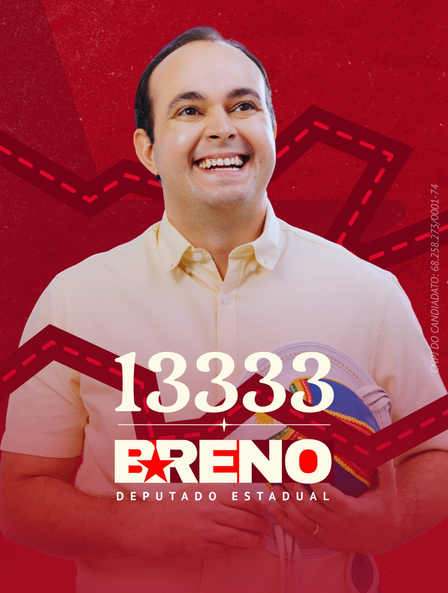
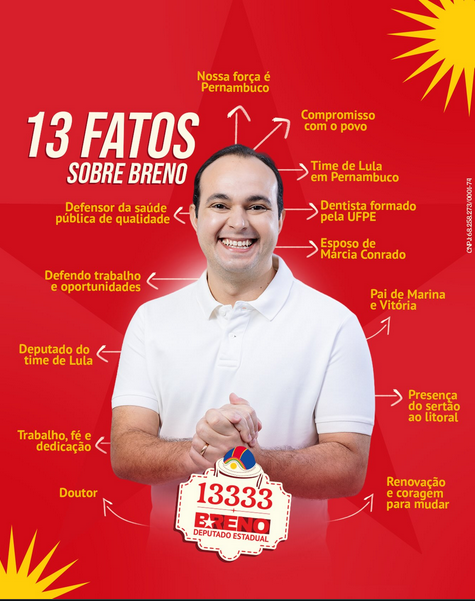

Cuidar da Saúde Regional
Fortalecimento dos Hospitais Regionais e criação de políticas estaduais de saúde bucal avançada para reduzir as filas no interior.
Candidato a Deputado Estadual
Dentista, marido e pai de duas filhas. Uma campanha de rua, feita com quem trabalha, cuida e acredita num estado com mais saúde e oportunidade. No time de Lula.


Dentista formado pela UFPE, Breno passou a vida atendendo gente que depende do serviço público. Casado com Márcia Conrado e pai de Vitória e Marina, ele carrega para a Assembleia Legislativa a mesma escuta e cuidado que aprendeu no consultório e nos postos de saúde.
A candidatura ganha força desde Serra Talhada até a Região Metropolitana: caminhadas, conversas de calçada e encontros com profissionais de saúde, mães atípicas, trabalhadores e jovens que buscam renovação e coragem para mudar.
Seis compromissos reais e adequados ao papel de um Deputado Estadual para transformar Pernambuco.
Fortalecimento dos Hospitais Regionais e criação de políticas estaduais de saúde bucal avançada para reduzir as filas no interior.
Expansão das Escolas Técnicas Estaduais (ETEs), valorização dos professores e apoio na estrutura dos polos da UPE no interior.
Cobrança pelo aumento do efetivo policial estadual no interior, modernização das delegacias e projetos de prevenção focados na juventude.
Recuperação e manutenção constante das rodovias estaduais (PEs) que conectam o interior e garantem o escoamento da nossa produção.
Revisão de incentivos fiscais estaduais para atrair indústrias para as cidades do interior, além de apoio real ao microempreendedor pernambucano.
Fortalecimento de programas de distribuição de renda, criação de restaurantes populares e políticas voltadas para as mães atípicas.
Deixe seu contato e venha construir a vitória com a gente.